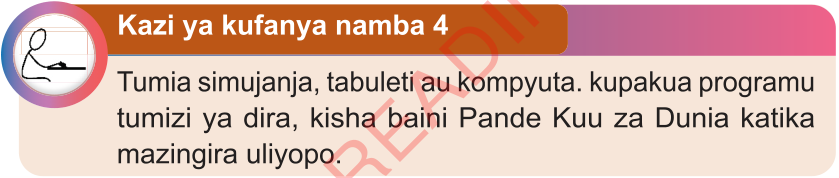

Kazi ya kufanya namba 4
Tumia simujanja, tableti au kompyuta. kupakua programu tumizi ya dira, kisha baini Pande Kuu za Dunia katika mazingira uliyoopo.

Tumia simujanja, tableti au kompyuta. kupakua programu tumizi ya dira, kisha baini Pande Kuu za Dunia katika mazingira uliyoopo.